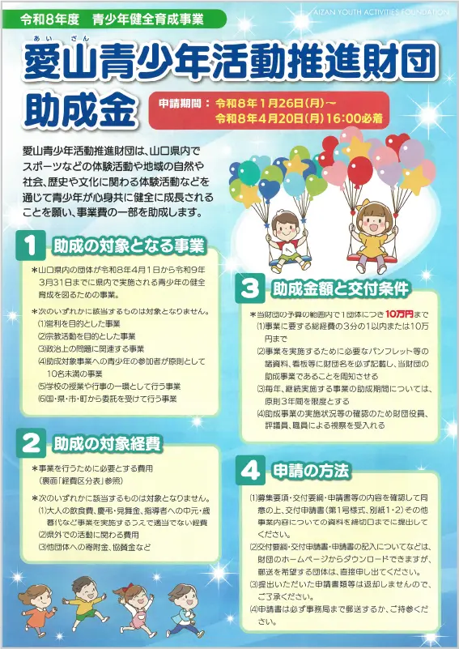
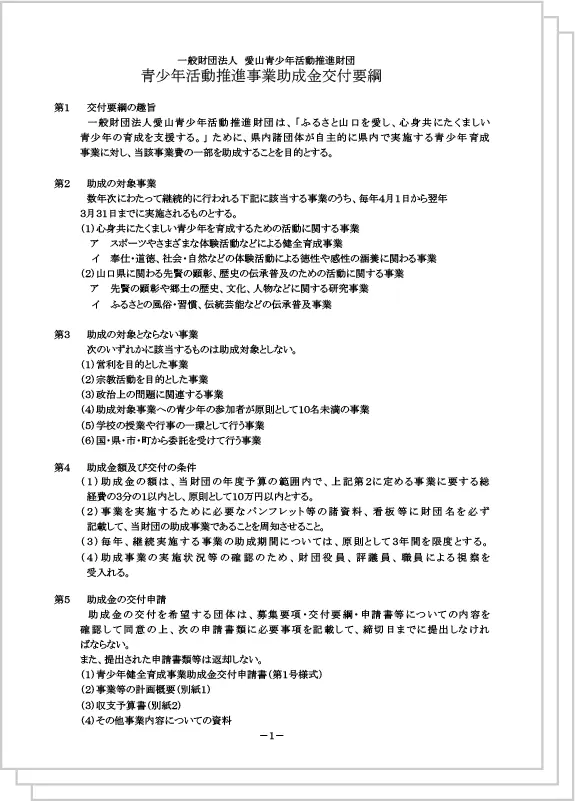

パンフレット
助成金に関する概要を載せています

令和8年度助成金募集（PDF）をダウンロード

助成金の申請にあたっては、
募集要綱に記載された助成の目的、対象要件、申請方法等をご確認いただき、
必要書類を添えてご申請くださいますようお願いいたします。
一般財団法人「愛山青少年活動推進財団」は、新しい時代を拓く子供達が、スポーツなどの体験活動や地域の自然や社会、歴史や文化に関わる体験活動を通じて心身共に健全に成長されることを願い、県内諸団体が自主的に県内で実施する青少年育成事業に対し、事業費の一部を助成するものです。
数年次にわたって継続的に行われる下記に該当する事業のうち、令和8年4月1日から令和9年3月31日までに実施されるものとします。
心身共にたくましい青少年を育成するための活動に関する事業
山口県に関わる先賢の顕彰、歴史の伝承普及のための活動に関する事業
次のいずれかに該当するものは対象となりません。
令和8年4月20日（月）16：00必着（期限厳守のこと）
ご不明な点等ございましたら、下記電話・FAX・E-mailでお問い合わせください。
〒753-0083 山口県山口市後河原25番地（愛山会ビル3階）印刷またはオフラインでの確認にご利用ください
助成金に関する概要を載せています

令和8年度助成金募集（PDF）交付要綱を3ページにまとめています

助成金交付要綱（PDF）